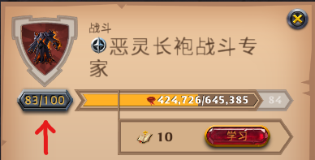
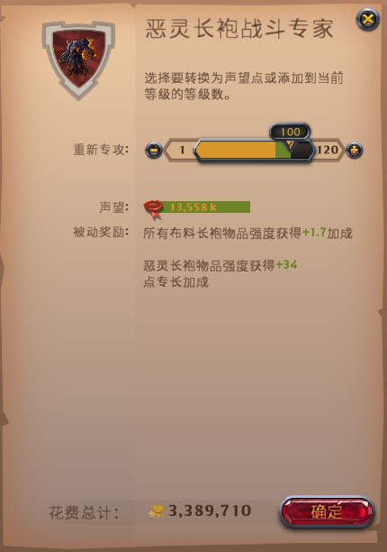

戰鬥聲望點
戰鬥聲望點(也稱自由點)獲取、使用、自動重新專攻。
獲取
裝備中的頭、甲、鞋、武器、副手，如果該物品內圈或外圈達到 Lv100 或以上，
則pve聲望會以一定比例轉為戰鬥聲望點(聲望溢出)。
聲望溢出轉換為戰鬥聲望點的比例：(內外圈皆同)
則pve聲望會以一定比例轉為戰鬥聲望點(聲望溢出)。
聲望溢出轉換為戰鬥聲望點的比例：(內外圈皆同)
| 裝備類型 | 轉換比例 |
| 頭 | *0.025 |
| 甲 | *0.05 |
| 鞋 | *0.025 |
| 武器 | *0.1 |
| 副手 | *0.005 |
某物品如果內外圈皆為 Lv100 或以上，獲得的聲望點會重複計算。
例：
帶一套裝備(含頭、甲、鞋、武器、副手)刷怪，獲得了 10,000 pve聲望(已包含雜七雜八的聲望加成)，
且整套裝備內外圈都 Lv100 或更高，
那麼可以獲得 10,000*0.41 = 4,100 戰鬥聲望點
例：
帶一套裝備(含頭、甲、鞋、武器、副手)刷怪，獲得了 10,000 pve聲望(已包含雜七雜八的聲望加成)，
且整套裝備內外圈都 Lv100 或更高，
那麼可以獲得 10,000*0.41 = 4,100 戰鬥聲望點
自動重新專攻

如果開啟，獲得的戰鬥聲望點提高至 4 倍，但是每獲得 1 點戰鬥聲望點，會損失 0.9 銀幣。
例：
如果轉換比例為 0.4 並且開啟自動重新專攻，獲得了 10,000 pve聲望，
那麼可以獲得 10,000*0.4*4 = 16,000 戰鬥聲望點
將會損失 16,000*0.9 = 14,400 銀幣 (pve聲望*1.44)
例：
如果轉換比例為 0.4 並且開啟自動重新專攻，獲得了 10,000 pve聲望，
那麼可以獲得 10,000*0.4*4 = 16,000 戰鬥聲望點
將會損失 16,000*0.9 = 14,400 銀幣 (pve聲望*1.44)
使用
點擊裝備的內圈或外圈圖示，進到聲望進度條介面，按下等級按鈕。(至少要Lv1)

進入到升級介面

使用拉桿或是點擊"+"按鈕，可以花費戰鬥聲望點直接升級內外圈裝備的等級。
裝備的外圈等級到 Lv100 就無法經由pve聲望直接升級了，僅能使用戰鬥聲望點升級到Lv120。
每 1 點戰鬥聲望點可以轉換成：(內外圈皆同)
裝備的外圈等級到 Lv100 就無法經由pve聲望直接升級了，僅能使用戰鬥聲望點升級到Lv120。
每 1 點戰鬥聲望點可以轉換成：(內外圈皆同)
| 裝備類型 | 等級進度條增加 |
| 頭 | 8 聲望 |
| 甲 | 4 聲望 |
| 鞋 | 8 聲望 |
| 武器 | 2 聲望 |
| 副手 | 40 聲望 |
例：
若外圈某鞋 Lv72 升 Lv73 還需 285,086 聲望，285,086/8 = 35,635.75 ~ 35,635，
則 Lv72 升 Lv73 需要花費 35,635 戰鬥聲望點。
如果等級為 Lv100 或以上，除了要消耗戰鬥聲望點，還需要花費 戰鬥聲望點*0.3 銀幣才可升級。
例：
如果外圈某武器 Lv106 升 Lv107 需要 2,329,334 聲望，2,329,334/2 = 1,164,667，
那麼 Lv106 升 Lv107 需要花費 1,164,667 戰鬥聲望點，
以及 1,164,667*0.3 = 349,400.1 ~ 349,400 銀幣。
如果點擊"-"按鈕或把拉桿往左邊拉，可以花費銀幣將等級聲望轉為戰鬥聲望點，
需要支付 獲得的戰鬥聲望點*0.9 銀幣。
若外圈某鞋 Lv72 升 Lv73 還需 285,086 聲望，285,086/8 = 35,635.75 ~ 35,635，
則 Lv72 升 Lv73 需要花費 35,635 戰鬥聲望點。
如果等級為 Lv100 或以上，除了要消耗戰鬥聲望點，還需要花費 戰鬥聲望點*0.3 銀幣才可升級。
例：
如果外圈某武器 Lv106 升 Lv107 需要 2,329,334 聲望，2,329,334/2 = 1,164,667，
那麼 Lv106 升 Lv107 需要花費 1,164,667 戰鬥聲望點，
以及 1,164,667*0.3 = 349,400.1 ~ 349,400 銀幣。
如果點擊"-"按鈕或把拉桿往左邊拉，可以花費銀幣將等級聲望轉為戰鬥聲望點，
需要支付 獲得的戰鬥聲望點*0.9 銀幣。
編輯紀錄
作者: runnywolf
最後編輯日期: 2022/08/04